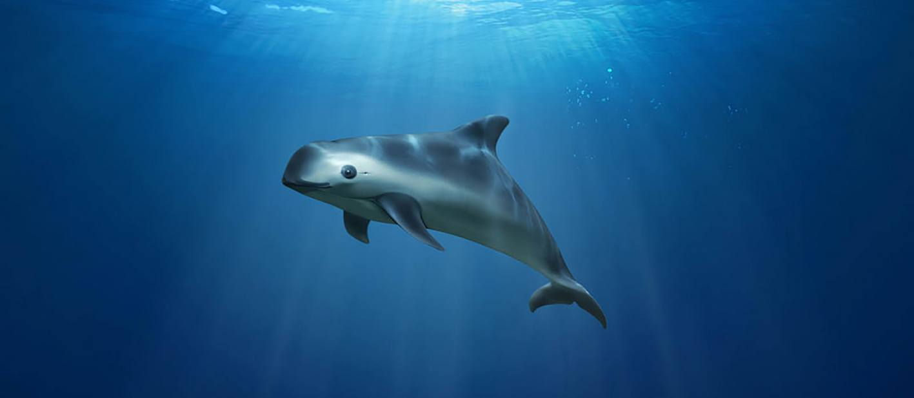

Vaquita
With less than 100 thought to exist, and fewer than 20 vaquita
remain in the wild, the Vaquita is the rarest marine mammal in the world.
Time is running out for these little sea porpoises, with extinction
predicted as soon as 2020. They are found only in the northern Gulf of
California (Sea of Cortez) in Mexico. The main reason these sea porpoises
are going extinct is mainy because the small animal frequently gets caught
in fixed fishing nets (gill-nets), as by-catch. Unable to surface for air,
the entangled animals drown within minutes. This threat is accelerated by
illegal fishing for another endangered species that lives in the vaquita
habitat, the totoaba ─ a large species of fish sought after for its swim
bladder, driven by demand from China.

Source: Wild For Life (https://wildfor.life/species/vaquita)